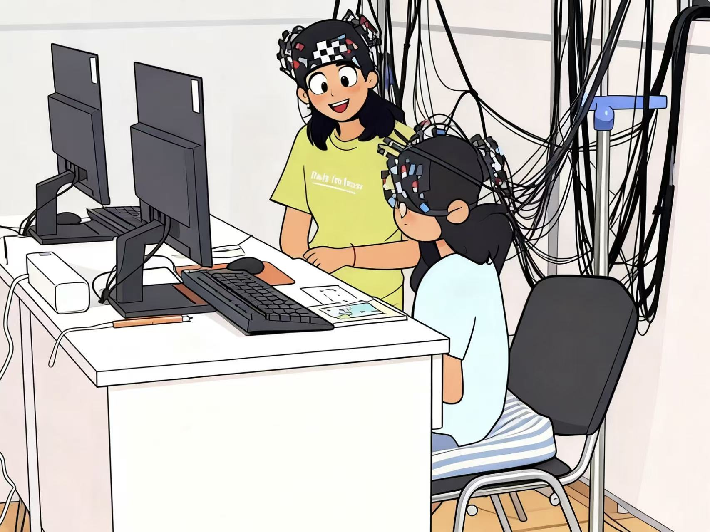
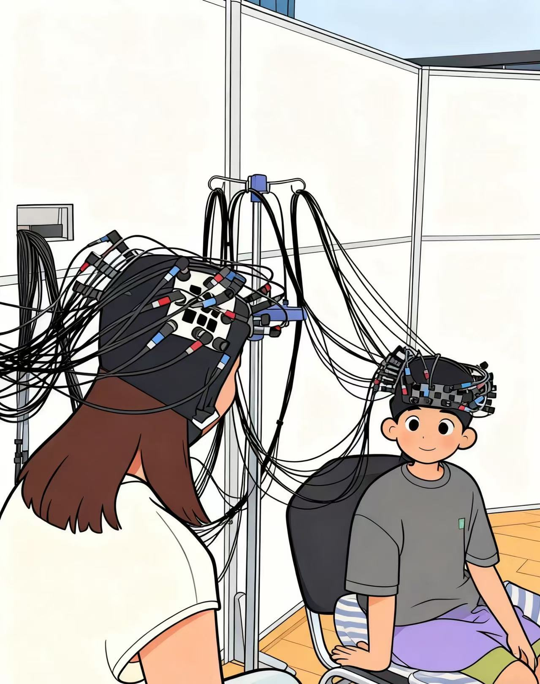

Ph.D. in Developmental and Educational Psychology · Capital Normal University
I study the cognitive and neural mechanisms of moral judgment and prosocial behavior in early childhood, combining computational modeling with functional near-infrared spectroscopy (fNIRS).
I received my Ph.D. in Developmental and Educational Psychology from Capital Normal University in 2026, working with Professor Zhengyan Wang at the Research Center for Child Development.
My dissertation asks how 6-year-old children make moral judgments, and what the underlying cognitive processes and brain mechanisms look like. Using the CNI framework — a multinomial processing tree model — I separate three independent processes (sensitivity to consequences, sensitivity to norms, and a general inaction preference) and use fNIRS to map them onto cortical activation and resting-state functional connectivity. A parallel line of work follows the longitudinal development of prosocial behavior from 6 to 36 months in a Chinese cohort.
I am currently looking for postdoctoral opportunities starting in fall 2026.
Using the CNI multinomial processing tree model, I decompose 6-year-old children's responses to moral dilemmas into three independent processes — sensitivity to consequences, sensitivity to norms, and a general preference for inaction. This is the first systematic application of the CNI framework to Chinese children, and to my knowledge the youngest age group it has been applied to.
Combining fNIRS task-state and resting-state measurements, I map the three CNI processes onto cortical activation and intrinsic functional connectivity in young children. Findings highlight a right-lateralized prefrontal pattern in 6-year-olds that contrasts with the more bilateral, distributed adult pattern, and reveal distinct connectivity signatures for each of the three processes.
I examine how individual-level cognitive factors (theory of mind, effortful control) and family-level environmental factors (maternal warmth, harsh parenting) jointly shape both the behavioral and neural indicators of children's moral judgment, with attention to where these pathways diverge.
In a parallel longitudinal line of work, I follow children from 6 to 36 months and examine how infant temperament, early social evaluation, and parental prosociality predict the trajectory of their prosocial behavior. This work is part of the BELONGS cohort at Capital Normal University.

Ph.D. Student Coordinator
A longitudinal study examining how early multilevel parent–child interaction synchrony shapes the development of attachment representations in preschoolers, with fNIRS hyperscanning as the central neural measure.
I coordinated the full assessment cycle for the cohort — including recruitment, assessor training, parent–child fNIRS hyperscanning, behavioral assessments (e.g., Wechsler), questionnaires, and database maintenance — and led statistical analyses and manuscript writing.

Ph.D. Student Coordinator
A project investigating how behavioral and neural synchrony during mother–child interaction contributes to the intergenerational transmission of empathy in preschoolers.
I supervised a team of master's students, coordinated assessment for over 130 families, designed the experimental protocols, and served as the primary experimenter for mother–child fNIRS hyperscanning. Outputs from this project include a first-author paper in Journal of Experimental Child Psychology.
A full CV with education, publications, research experience, conference talks, and technical skills is available below.
Download CV (PDF)